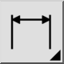
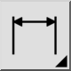

Återställ etikettspositioner
Verktygsfält / ikon:


Meny: Dimension > Återställ etikettspositioner
Genväg: D, S
Kommandon: dimregen | ds
Detta är en automatisk översättning.
Verktygsfält / ikon:


Meny: Dimension > Återställ etikettspositioner
Genväg: D, S
Kommandon: dimregen | ds
Det här verktyget återställer etikettpositionen för alla markerade dimensionsenheter och placerar deras etikett tillbaka till den automatiskt beräknade positionen.